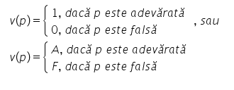
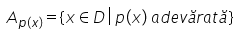
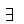

Propoziția (matematică) este un enunț care poate fi adevărat sau fals.
Valoarea de adevăr a unei propoziții p se notează v(p):

Predicatul este un enunț care conține una sau mai multe variabile și care, pentru anumite valori atribuite variabilelor,
corespunde unei propoziții adevărate sau false.
Notații:
p(x) - predicat unar
p(x,y) - predicat binar
p(x,y,z) - predicat ternar.
Mulțimea D în care variabilele iau valori se numește domeniu de definiție al predicatului.
Mulțimea de adevăr a unui predicat este:

Prin utilizarea cuantificatorilor, transformăm predicatele în propoziții.
Cuantificatorul existențial:
Propoziția existențială: